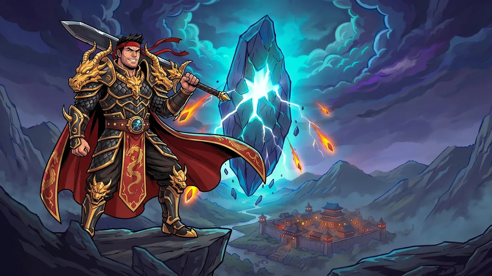

Bonghwa
Az első lehetséges otthonod.

A VIHAR VILÁGA, EGYETLEN KÓDEXBEN.
Felszerelések, hűséges társak és elfeledett vidékek.
Fedezd fel a Stonestorm magyar tudástárát,
és tervezd meg a következő kalandod.
TUDÁS A KÖVETKEZŐ KALANDHOZ
Az Atlas betöltése…
AZ ELSŐ LÉPÉSTŐL A LEGENDÁIG
Minden, ami a kezdetekhez kell.
Lépésről lépésre, érthetően.
Válassz királyságot és találd meg
a hozzád illő kasztot.
A falutól az első expedícióig.
Így indulj el a kalandodon.
Kis lépések, biztos fejlődés.
Hozd ki a legtöbbet a napodból.
Erősebb hős, jobb felszerelés.
Ismerd meg a fejlődés
alapjait.
A Stonestorm kelet-ázsiai fantasyvilágban játszódó idle MMORPG. Hősöd akkor is vadászhat és fejlődhet, amikor te mással foglalkozol. Ez a kalauz segít átlátni az első döntéseket.
A kalauzról01 / A HŐS SZÜLETÉSE
Bonghwa piros, Horang sárga, Miru kék királyság. A céhek azonos világban mindháromból fogadnak tagokat. A Few members, extra reward jelölésű választás Pioneer pack jutalmát a kártyán megadott szinten kapod.
A királyság végleges választás. Amíg a hős még új, egyszer ingyen újrakezdhetsz. A barátokkal azonos világot válasszatok.
Az első lehetséges otthonod.
Egy másik zászló, közös kaland.
A harmadik út a világba.
A jelképek saját, hangulati illusztrációk, nem hivatalos címerek.
Jelölj ki két kasztot az összehasonlításhoz.
Strength: Warrior és Mage sebzése. Dexterity: Ninja sebzése, továbbá mindenkinek kritikus találat és kitérés. Vitality: HP és védelem. Intelligence: Shaman sebzése és a képességhez szükséges SP.
Minden szinten statpontokat kapsz. A Suggested split elosztja őket a kasztodhoz; a Reset stats visszaadja a pontokat, és az első reset ingyenes. A két skill path közül korán választhatsz, értékeiket a Character → Skills mutatja.
ISMERD MEG A KARAKTERLAPOT
A Character oldalon együtt látod a felszerelést, a statokat és a képességeket. A hivatalos képernyőképen egy Warrior karakterlapját nézheted meg.
Felszerelés és Combat Power02 / AZ ELSŐ KALAND
Egy érintéssel kezdhetsz vendégként. A későbbi e-mailes fiókmentés ingyenes és néhány Storm Coins jutalmat ad. Kódbeváltáshoz és chathez is szükséges.
Tipp: a mobilos kezdőképernyőről indított játék külön böngészőnek számít. Előbb mentsd a hőst!A leckék bármikor újraolvashatók a ? gomb mögötti Book of tips gyűjteményben. Ha valamit hosszan nyomva tartasz, Gilhwa elmagyarázza.
A felső tekercs mutatja az aktuális történeti parancsot. A fejezetek jutalmakat adnak, és a következő map bosshoz vezetnek. Ha nincs új történeti feladat, napi Captain’s contracts várnak.
Dongsu: Daily Tasks. Gangdo: Blacksmith. Minah: potions; Kalbin: weapons; Taesan: armour; Jamul: materials. A felkiáltójel azt mutatja, hogy valaki vár rád.
Hunt → Forays: válassz rövid, közepes vagy hosszú utat. A kártya mutatja az időt, energiát, jutalmat és a nehézséget: Easy, Even vagy Tough. Az állomások döntései után a stone guardians és egy választható láda vár.
Tipp: kezdd Easy úttal, és nézd meg a tooltipben a győzelmi esélyt.Hunt → Hunting spots: válassz helyet az óránkénti XP és nyang alapján. A hős offline is gyűjt, de a zsák megtelésekor megáll. Gyűjtsd be rendszeresen; a Go here jobb helyre irányít.
03 / KIS LÉPÉSEK, BIZTOS HALADÁS
Ez a saját ellenőrzőlistád. Pipáld ki, amit elvégeztél, és folytasd onnan, ahol abbahagytad.
Jutalmak, napi feladatok, energia és az elérhető bosspróbálkozások ellenőrzése.
Tipp: nézd át a felszerelést, gyűjtsd be a jutalmakat, és ellenőrizd a háttérvadászatot.
Ha már megnyílt: napi companion Feed, ingyenes dungeon keys, Guild Raid támadás és Hakmun mintáinak leadása. A Stormcatcher pihenőjét a Today's to-do mutatja.
Az egyes napi rendszerek elérhetőségét és próbálkozásait mindig a játékban ellenőrizd. A listán szereplés nem jelenti, hogy minden funkció már megnyílt a karakterednek.
Mentés csak ebben a böngészőben. Új lista a helyi naptár szerinti következő napon; ez nem a játék napi visszaállítása.
04 / A KÖVETKEZŐ SZINT
Kattints a HUD CP értékére az összetevőihez. A Hunt oldal sávja a térkép átlagos hőséhez mér. A tárgyon látható ▲ jel a jelenleg viseltnél jobbat mutatja.
Tipp: a CP-változásra jobban figyelj, mint önmagában a tárgy színére. A viselési szint a tárgykártyán látható.
Alacsonyabbtól a magasabb ritkaság felé:
A Heroic lila, a map boss saját Mythic tárgya arany. Magasabb ritkasággal több bónuszsor és foglalat jár. A fegyver és armour kaszthoz kötött; a többi felsorolt slot közös.
A KOVÁCS MELLETT
Blacksmith → Upgrade. Gangdo a Chance alatt mutatja a pontos esélyt, a Cost alatt az árat. Hiányzó anyagnál a Where from? segít.
Az első, biztonságosnak jelölt lépések mindig sikerülnek. Tipp: fejleszd így minden viselt tárgyadat.
Védelem nélkül sikertelenségkor a tárgy és a belehelyezett Spirit Stone-ok is elégnek.
A forrás nem ad számszerű biztonsági határt. Mindig a következő lépés Chance és Cost értékét ellenőrizd.
Sikertelenségkor a tárgy megmarad, de egy fejlesztési fokozatot visszaesik.
Sikertelenségkor a tárgy megmarad, és a fejlesztési fokozatát is megtartja.
A bossoktól a Blacksmith → Sockets fülre kerülnek. Rare vagy jobb tárgyba ingyen illeszthetők.
AZ ELSŐ NAGY KIHÍVÁS
A Village Outskirts első map bossa. Legyőzése megnyitja a Highwayman Country térképet. A Hunt → Boss kártyája mutatja az esélyt és a napi ingyenes próbálkozásaidat; ezek csak korlátozottan gyűlnek.
Az első győzelem biztosan ad set-darabot, Heroic tárgyat és Spirit Stone-t. Ingyenes vereség után a Momentum segíti a következő próbát.
EGY PILLANTÁS A KÉSŐBBI HARCOKBA
A hivatalos Creator Kit Flamebeard elleni harcot mutat be. Nagyítsd ki a képet, és ismerd meg a harci felületet: a résztvevők, a HP és a képességek jelzéseit.
Tovább a bosskalauzhozPILLANATOK A VIHAR VILÁGÁBÓL
A falu főterétől a Stormcatcher tetejéig. Fedezd fel a játék hangulatát a hivatalos Creator Kit képein — kattints a részletekért.
Képek: Stonestorm · hivatalos Creator Kit ↗. A feloldásokat és az indulási időpontokat az útmutató megfelelő fejezetei jelzik.
MINDIG VAN EGY KÖVETKEZŐ KALAND
A teljes Discord-útmutató kezdőknek fontos témái, rövid fejezetekben. Nyisd ki, ami éppen érdekel, vagy keress a lenti tudásbázisban.
JÓ, HA KÉZNÉL VAN
Nem hivatalos, rajongók által készített magyar útmutató.
Elsődleges forrás: a játék hivatalos Discord-szerverének útmutatóiból összeállított, a projekt gazdája által átadott teljes TXT-dokumentum. Feldolgozva: 2026. október 31. Hivatalos weboldal: stonestorm.gg ↗. A „Tipp” szövegek ajánlások; a játékbeli elnevezéseket angolul hagytuk. A játék gyakran változik, ezért eltérésnél a frissebb hivatalos leírás és a játék felülete az irányadó.
A dokumentum szerint az App Store, Google Play és Steam változatok fejlesztés alatt állnak; a Kingdom War és Banner League 2026. november 9-én indul. Az időszakos kódokat és ajánlatokat a forrás szerinti dátumukkal jelöljük. A kalauz képei és a logó a Stonestorm hivatalos Creator Kitjéből származnak, engedéllyel használva. A magyar kalauz önálló rajongói oldal.
A napi lista dátumát és pipáit, a kiválasztott kasztokat, a témaszűrőt és a külön elmentett karakterbuildeket a böngésződ localStorage tárhelyén. Nincs analitika, fiók vagy adatküldés. A keresés helyben történik. A naptári nap a készüléked időzónáját követi. A böngésző tárhelyének törlésével a mentések is törölhetők; privát módban vagy file:// megnyitáskor a mentés böngészőfüggő.